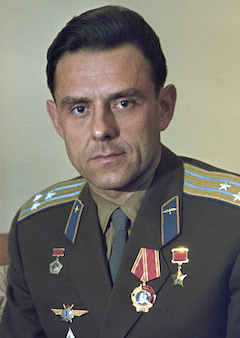

Soyuz 1
The one-day mission was plagued by a series of mishaps with the new spacecraft type, culminating with its parachute not opening properly after atmospheric reentry. Komarov was killed when the capsule hit the ground at high speed.
The Soyuz 1 crash site coordinates are 51.3615°N 59.5622°E, 3 kilometers (1.9 mi) west of Karabutak, Province of Orenburg in the Russian Federation, about 275 kilometers (171 mi) east-southeast of Orenburg. In a small park on the side of the road is a memorial monument: a black column with a bust of Komarov at the top.
Fallen Cosmonaut
-
Vladamir Komarov  Vladimir Mikhaylovich Komarov (16 March 1927 – 24 April 1967) was a Soviet test pilot, aerospace engineer, and cosmonaut. In October 1964, he commanded Voskhod 1, the first spaceflight to carry more than one crew member. He became the first Soviet cosmonaut to fly in space twice when he was selected as the solo pilot of Soyuz 1, its first crewed test flight. A parachute failure caused his Soyuz capsule to crash into the ground after re-entry on 24 April 1967, making him the first human to die in a space flight.